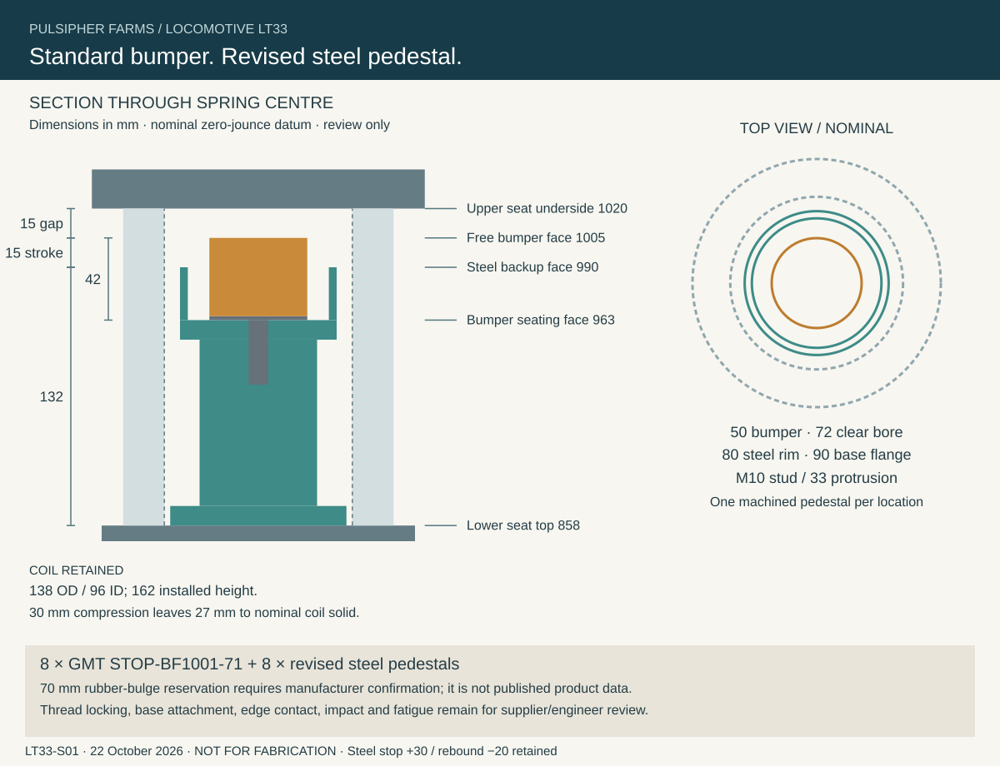

CURRENT SPRING DECISION · LT35
D5 replacement, supplier requests and corrected contact checks → D5 requires excessive frame adaptation and is no longer the preferred installation. Shorter standard alternatives requested; quotation and accepted installation remain open.
SIMPLE COMMERCIAL COMPONENT · LT33
A standard bumper inside the existing spring
Use eight GMT STOP-BF1001-71 rubber bump stops with revised steel pedestals. Earlier contact gives the rubber three times the previous working compression, while the spring and overall travel limits stay the same.
SPRING SOURCING · LT34 REVIEW
D5-Outer main springs and G63-152 roll springs → Supplier prices and availability, revised installation drawings, and mass-updated suspension checks. Main quotation and clearance/structure holds remain open.
Selected for development, not yet cleared to purchase or fabricate. The catalog dimensions and loading curve support this layout study. Rubber expansion, angled contact, impact duty and the attachment still need confirmation.
What changes on the locomotive
| Item | Previous | LT33 proposal |
|---|---|---|
| Bumper | Unselected 5 mm rubber ring | GMT STOP-BF1001-71; Ø50 ×42; M10 stud |
| First contact | +25 mm | +15 mm |
| Available rubber compression | 5 mm | 15 mm |
| Steel backup / rebound | +30 / −20 mm | Retained |
| Primary spring / wheel layout | Current LT32/C2 arrangement | Retained |
Installation section

Parts and service
Specify 8 × GMT STOP-BF1001-71 for application confirmation and quotation. Price and lead time have not been quoted. Each bumper seats in a stepped steel pedestal with a clear central pocket; the raised rim provides the separate steel backup.
Replacement requires the locomotive to be supported and the spring safely unloaded and removed before the bumper is unscrewed. Final lifting, spring-release and thread-locking instructions belong in the released maintenance procedure.
Manufacturer product page → · Manufacturer dimensions and curves →
Review downloads
Pedestal CAD / STEP · Bumper packaging envelopes / STEP · Load results and remaining checks →